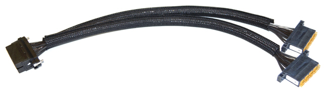
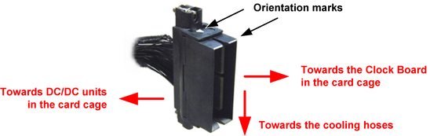
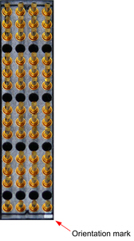

PVI8 pogo cable assembly (E8013PVP)
The E8013PVP pogo cable assembly connects the eight floating channels of the DC Scale PVI8 card to the DUT board.
Pogo cable assembly data
- Overall length: 500 mm ±10mm
- Pogo blocks: 2
- Pogo block style: 4-row pogo block
- Channels per pogo block: 4

J10 connector orientation
The J10 connector has two orientation marks: A white arrow on a narrow side of the connector and a white strip on the corresponding upper edge of the connector housing. The orientation mark on upper side of the connector remains visible when the connector is installed in the card cage.

Make sure that the orientation marks on the side and on the upper side of the connector are pointing away from the cooling hoses as shown in the figure above.
Pogo block layout
 |
The photo to the left shows the top view of a PVI8 pogo block. The empty rows 4, 8, 12, and 16 are named "Separation" in the PVI8 pogo pin assignment. |
Functional changes
- Introduced in SmarTest 7.3.1